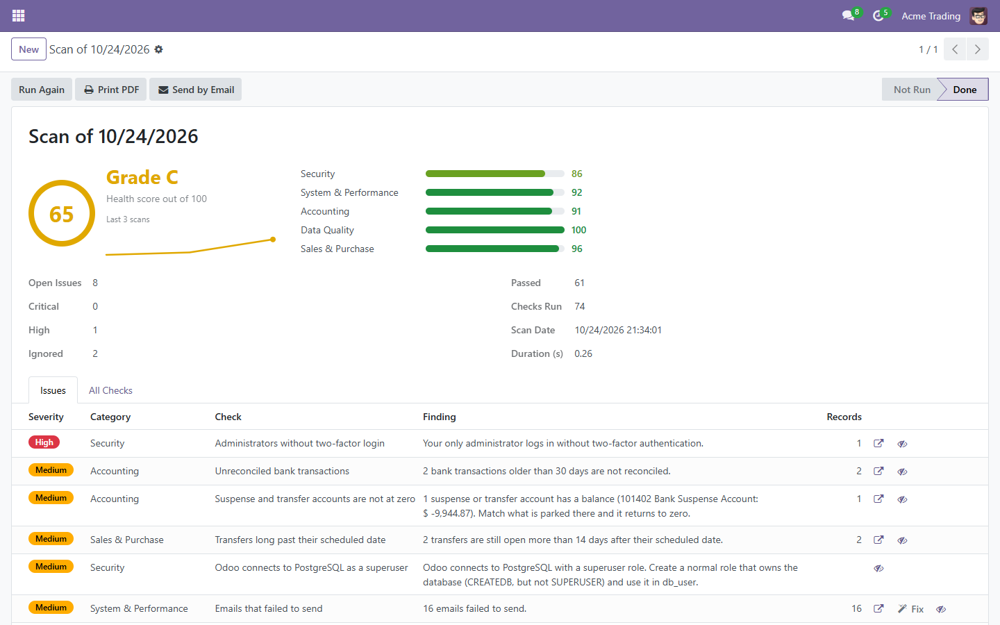
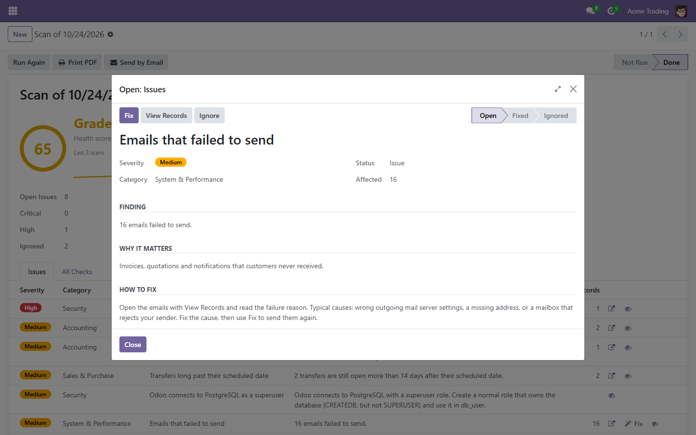
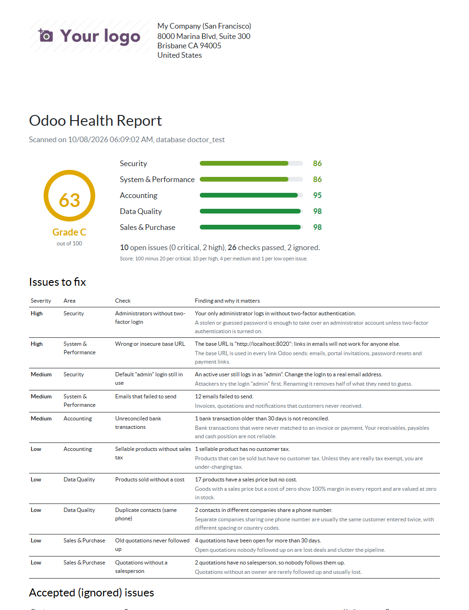
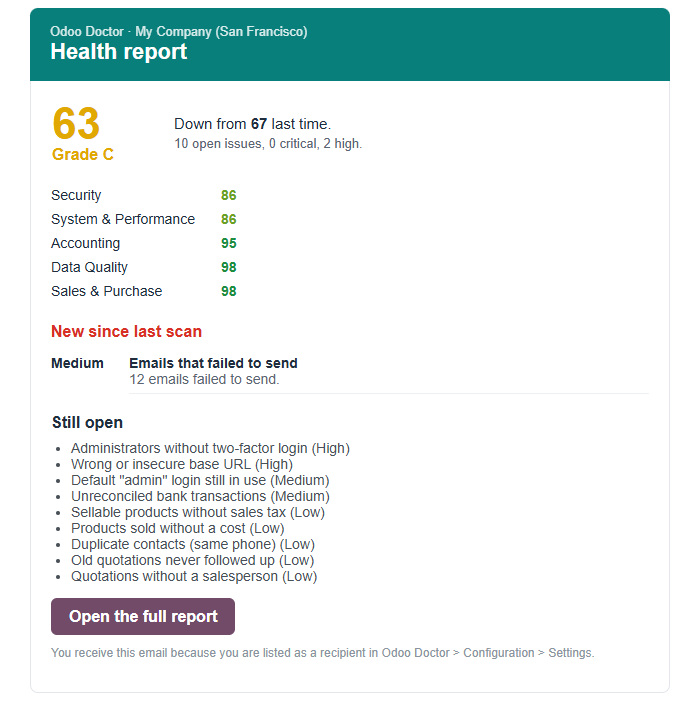

A health check for your Odoo database
74 checks for security, accounting, data quality and system health. One score out of 100, a list of problems ranked by severity, and the steps to fix each one. It runs inside Odoo 17, 18, 19 and 20, and nothing leaves your server.
Get Odoo Doctor, $26 Start with the free Lite

Sample data: a demo company called Acme Trading.
What it finds
The kind of problems that nobody notices until an audit, an upgrade or an outage: an administrator without two-factor login, a database manager open to the internet, unreconciled bank lines, invoices with gaps in their numbering, records whose files are missing, scheduled actions that stopped running. See all 74 checks.
Security
11 checks
- Database manager exposed
- Administrators without two-factor login
- Archived employees who can still log in
System & performance
32 checks
- Database connections nearly full
- Installed modules missing from the server
- Low disk space for uploaded files
Accounting
15 checks
- Unbalanced journal entries
- Possible duplicate vendor bills
Data quality
10 checks
- Negative stock
- Serial numbers in more than one place
Sales & purchase
6 checks
- Online payments waiting for confirmation
- Payment providers in test mode
- Purchases waiting for a vendor bill
How it works
- Install and scan. A scan only reads. It usually takes a few seconds, and runs again every week on its own.
- Read the score. You get a grade, a score per area and a trend, so you can see whether things get better or worse.
- Work down the list. Each finding says what is wrong, why it matters, how to fix it, and opens the affected records. Safe fixes are one click. Findings you accept can be ignored with a reason and an end date.
- Keep it that way. Get an email when the score drops, print a PDF report on your letterhead, and add checks of your own for your own rules.

Who it is for
Administrators
You inherited a database or run it alone. You want to know what to look at first without reading every setting.
Odoo partners and freelancers
Audit a client's database before an upgrade or a hand-over, and hand them a PDF. It lists the custom modules, the custom fields and the Python stored in the database that an upgrade has to deal with.
Developers
Add your own checks to the same scan, score and report with a few lines of Python. The interface is documented and kept stable.
Before an upgrade
An upgrade is easier when you know what is in the database that Odoo did not ship. Odoo Doctor lists it, and checks the things that make an upgrade fail:
- modules that are not made by Odoo, and installed modules whose code is missing from the server;
- modules left half-installed or half-upgraded;
- fields and models created in the interface, and Python code that lives only in the database;
- unbalanced journal entries, and whether your Odoo version is still in standard support.
It looks at the database, not at the code of your custom modules. To find deprecated code in your own modules, use Odoo's upgrade tooling; the two complement each other.
Free Lite, or the full Odoo Doctor
Odoo Doctor Lite is free, with no time limit and no account. It runs the 21 most important checks. The full Odoo Doctor runs all 74, and builds on Lite: your scans, settings and ignored issues stay as they are.
| Lite (free) | Odoo Doctor | |
|---|---|---|
| Health score, grade, area scores and trend | Yes | Yes |
| Weekly scan, history, ignore with a reason | Yes | Yes |
| Built-in checks | 21 | 74 |
| One-click fixes | - | Yes |
| Step-by-step how to fix on every finding | - | Yes |
| PDF report on your letterhead | - | Yes |
| Email when something gets worse | - | Yes |
| Your own checks, without code | - | Yes |
| Turn checks off, change severity and limits | - | Yes |


Get it
Both apps are on the Odoo Apps Store. Pick your Odoo version.
Odoo Doctor
$26 · all 74 checks
Odoo Doctor Lite
Free · 21 checks
Where it runs. On-premise and Odoo.sh. It is not available on Odoo Online (odoo.com databases), because Odoo does not allow third-party apps there.
Questions
Does it change my data?
A scan only reads. Nothing changes until you click a Fix button, and only the full Odoo Doctor has them.
Does anything leave my server?
No. There is no external service, no account and no tracking. The email summary goes out through your own outgoing mail server.
Who can see it?
Only users with Settings access. A Settings administrator gets the same scan whether or not they have access to sales, accounting or stock.
How is the score calculated?
You start at 100. Each open issue subtracts points by severity: critical 20, high 10, medium 4, low 1. Issues you accept stop counting until their end date.
Which versions are supported?
Odoo 17, 18, 19 and 20. Each version has its own automated test suite.
Can I trust the findings?
Every check has automated tests on all four Odoo versions, but a check can still disagree with how your company works. Ignore a finding with a reason and it stays quiet. If a check is wrong for you, tell us at clearbaseapps@gmail.com and we fix it.